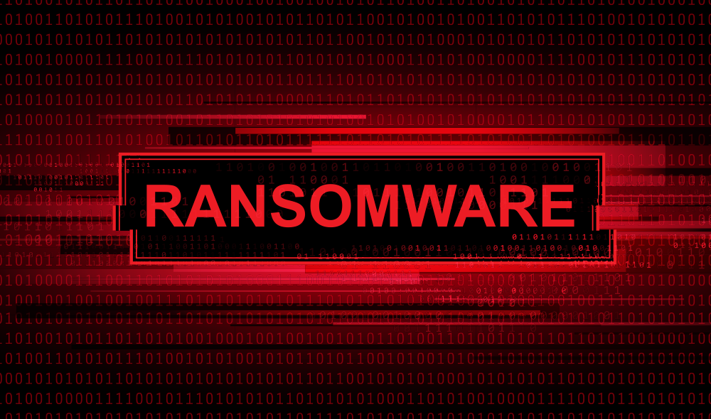

En 2024, l’opération judiciaire Cronos a marqué un tournant dans la lutte contre les ransomwares. Découvrez comment cette année a été marquée par une nouvelle dynamique dans l'écosystème cybercriminel et l'impact de l'opération sur les groupes de cybercriminels.

Le FBI a lancé un avertissement concernant les vulnérabilités des échanges entre les smartphones iOS et Android face aux cyberattaques chinoises. Découvrez les détails de ces attaques et comment vous pouvez protéger vos communications.
Le FBI a lancé un avertissement concernant les vulnérabilités des échanges entre les smartphones iOS et Android face aux cyberattaques chinoises. Découvrez les détails de ces attaques et comment vous pouvez protéger vos communications.

Les attaques de phishing, propulsées par l'Intelligence Artificielle, sont de plus en plus sophistiquées. Découvrez comment l’IA transforme la cybercriminalité et comment vous en protéger.